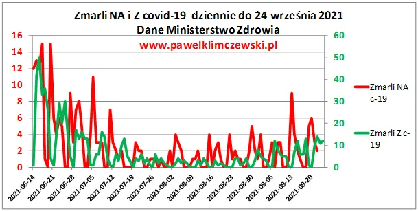
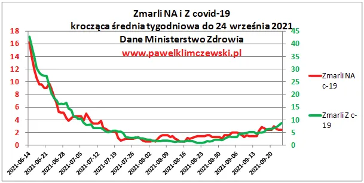

“PEWNA JEST TYLKO ŚMIERĆ 2” - panie ministrze !
"Pewna jest tylko śmierć" to był mój wpis z marca 2020, gdy zorientowałem się, że dane o zakażeniach to literacka fikcja Ministra Śmierci 1 i całą diagnozę i krytykę "plandemii" oparłem o zgony, co pozwoliło zdemaskować to oszustwo.
Media, jak to media, straszą zakażeniami, ale przypominam, że podawana liczba zakażonych nie ma NIC WSPÓLNEGO z liczbą zakażonych w Polsce. To tylko liczby pozytywnych testów wśród osób, które jakoś tam wpadły do maszyny Ministerstwa Śmierci. Ci ludzie najczęściej nawet nie podejrzewali, że "mogą być chorzy", bo by wtedy testowaniu się nie poddali. Komu taki kłopot potrzebny, jak kwarantanna całej rodziny? "Zakażeni" to ludzie, którzy chcieli iść do ortopedy z bolącym kolanem, albo mieli wyjechać na wakacje, itp. no i pech, producent testów ich "wylosował". Prawdziwa liczba ludzi zakażonych patogenem X to po prostu liczba zmarłych od tego patogenu podzielona przez współczynnik śmiertelności Y, które w danym sezonie jest stały. Z faktu, że od zakażenia trzeba umowne 2 tygodnie przechorować ciężko, zanim się umrze mamy na podstawie zgonu dynamikę przyrostu zakażeń z połowy września i wychodzi ona na poziomie 4% a nie 40% jak straszy Minister Śmierci.
Faktyczna liczba zakażonych nie jest dla nas ważna, bo każdy z nas jest czymś zakażony i nic z tego nie wynika. Ważna jest liczba ciężkich przypadków i śmierci, a te są znikome. Najważniejsze jest naprawdę to jak szybko sytuacja się zmienia, a zmienia się wolno, jak co roku jesienią od wieków.

Pierwszy wykres pokazuje dobowe, oficjalne liczby zgonów, ale z racji, że urzędnicy mają swoje "opóźnienia" na drugim wykresie, prezentuję średnią z ostatnich 7 dni, co jest miarą zjawiska.

Nachylenie zakończenia linii czerwonej pokazuje nam jak we wrześniu "szaleje 4 fala" przy 2,4 zgonach covidowych na dobę przy poziomie ponad 200 zgonów dziennie na choroby układu oddechowego i 1250 wszystkich zgonów w Polsce.
Panowie ministrowie, dzieci do szkoły, wy na naukę mieliście czas, teraz pod sąd!
Paweł Klimczewski